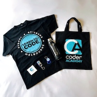
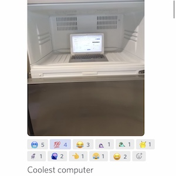
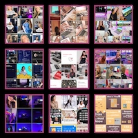
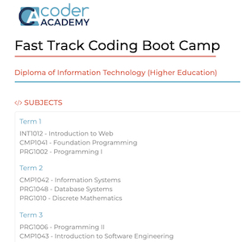
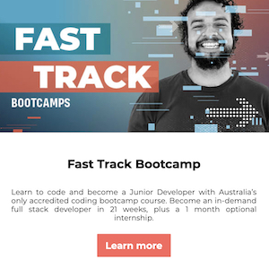
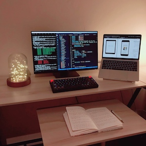

I had a wonderful and informative orientation day at Coder Academy today!
Coder academy orientation

SWAG bag with beautiful items

"The coolest computer” setup
It was nice meeting everyone and playing creative games together to get to know each other more.
I’m so excited to go back to the classroom again and I look forward to learning to code with my cohort!
Women in tech
Karen Chang
Women in tech, how can we help each other?
After learning to code for a while, I started to think about what I could do to make others more aware of
WIT, and to help women and other underrepresented minorities in tech.
Support female tech thought leaders!

Instagram influencers for women in tech
After spending some time exploring the hashtag #womenintech and thanks to
everyone who ever shared good
posts with me, I got to follow many female industry influencers on Instagram.
I can only list a few of them, but there are still countless techie ladies who have made outstanding
contributions to the field.
I’ve learned so much from them and I hope that one day, I will also be able to inspire a girl’s life, to
close the gender gap, and to help women embrace technology.
Welcome to send me a message if you have a good idea of helping WIT, or recommend any lady I could follow
and
learn from.
Let’s help each other to grow!
Moving on
Karen Chang
I have made this big decision at the end of the year, to quit my full-time job, step out of my comfort
zone, and enrol in the course of Diploma of IT at
Coder Academy Melbourne Campus.

Diploma of Information Technology
I have done my research on local bootcamps and talked to teachers and students. I chose Coder Academy
because of these benefits below:
AUSTRALIA’S ONLY ACCREDITED CODING BOOTCAMP
Graduate with a Higher Education Diploma in Information Technology, which is recognised as the first
year of a Bachelor of Computer Science Degree.
INTENSIVE FULL-TIME STUDY
25 weeks/35 hrs a week. Becoming an employable Junior Developer in only 6 months!
INDUSTRY-DRIVEN
Educators & mentors direct from industry
Project-based coursework
Foster strong industry relationships
OPTIONAL INTERNSHIP OPPORTUNITY
A structured one-month work placement for all students following the completion of the course.
GOVERNMENT FEE-HELP LOANS AVAILABLE
Australian citizens can get a FEE-HELP loan to pay all or part of the tuition fees.

AUSTRALIA’S ONLY ACCREDITED CODING BOOTCAMP
It's never too late to change your life.
Have courage, pursue your dreams, and make it happen!
I want to thank everyone who ever liked my post or left comments to cheer me up. It means a lot to me.
I also want to thank me for pushing myself to achieve my goals and not giving up. Now coding has become
my
habit and everyday routine.
Thank you for supporting!
I might not keep posting my newbie code every single day, but I will definitely keep learning and
sharing
my progress every now and then.
Happy coding!
My first line of code
Karen Chang
COVID-19 has changed the world forever. During the lockdown period, I motivated myself to pick up
something
that I am always interested in, to not only stay home to save lives, but also learn some new skills for
self-improvement.
Udemy, freeCodeCamp and Codecademy
made it easier for me to get started and now I am able to write and understand code that I
previously perceived as
too complicated.

Self learning at home
I've been staying highly motivated since my first line of code in April
2020 and will continue my journey to explore the world of programming!